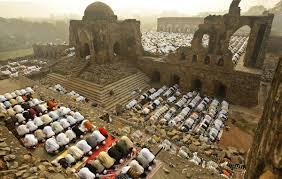
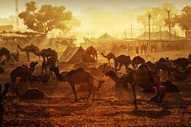

Khulfa-e-Rashideen
Khulfa-e-Rashideen Were the consecutive successors of Sayyiduna Rasulullah
(sallal laahu alaihi wasallam).
These four Khulafaa (pl. for Caliph) are called the “Khulafaa-e-Rashidun” or the “Rightly Guided Caliphs.” Together, these four Khulafaa ruled the Islamic State for about 29 years. They are called “Rightly Guided”because they ruled the people of that time exactly according to the Holy Quran and the commands of Sayyiduna Rasulullah (sallal laahu alaihi wasallam).
Sayyiduna Abdullah ibn Umar (radi Allahu anhu) has said:
“Those who are desirous of following anyone, should follow the Sahaba who were the best of community, whose hearts were pure, whose wisdom was profound and who did not believe in the exhibition of outer life. They were a people whom Allah had selected His Nabi (sallal laahu alaihi wasallam) and who extended His religion to the world. Therefore, try to imitate their ways and manners, for by Allah, they were rightly guided people.”
HAZARAT ABU BAKAR

EARLY LIFE
Sayyiduna Abu Bakr (radi Allahu anhu’s) real name was Abdullah, and he was given the title of “As Siddique” or”Testifier to the Truth.” His father, ‘Uthman, was known as Abu Quhafah and his mother, Salma, was known as Ummul Khair. He was two and a half years younger than Sayyiduna Rasulullah (sallal laahu alaihi wasallam).
He was the first among the Sahaba to accept Islam. He accompanied Sayyiduna Rasulullah (sallal laahu alaihi wasallam) during the Hijrah to Madinatul Munawwarah. Sayyiduna Abu Bakr (radi Allahu anhu) was a merchant. He freed many slaves, including Sayyiduna Bilal (radi Allahu anhu) and Sayyiduna Umayyah bin Qahaf (radi Allahu anhu). He participated in all the battles in which Sayyiduna Rasulullah (sallal laahu alaihi wasallam) had to fight the Kuffar.
Sayyiduna Abu Bakr (radi Allahu anhu) loved his faith more than anything else. At the Battle of Badr, his son, Sayyiduna Abdur Rahman (radi Allahu anhu), was fighting on the side of the Kuffar. After accepting Islam, Sayyiduna Abdur Rahman (radi Allahu anhu) said to his father, “O Father, at Badr, you were twice under my sword, but my love for you held my hand back.” To this, Sayyiduna Abu Bakr (radi Allahu anhu) replied, “Son, if I had you only once under my sword, you would have been no more.” He was so uncompromising in his faith.
At the time of the Battle of Tabuk, he donated all his wealth to the war effort, and when Sayyiduna Rasulullah (sallal laahu alaihi wasallam) asked him, “What have you left for your family,?” he replied,
“Allah and His Rasool (sallal laahu alaihi wasallam).”
As a Chaliph
 After his election as the Caliph, Sayyiduna Abu Bakr (radi Allahu anhu) addressed the Muslims with these words:
After his election as the Caliph, Sayyiduna Abu Bakr (radi Allahu anhu) addressed the Muslims with these words:
“O People! I have been chosen by you as your leader, although I am no better than any of you. If I do any wrong, set me right. Listen, truth is honesty and untruth is dishonesty. The weak among you are the powerful in my eyes, as long as I do not give them their dues. The powerful among you are weak in my eyes, as long as I do not take away from them what is due to others."
“Listen carefully, if people give up striving for the Cause of Almighty Allah, He will send down disgrace upon them. If people become evil-doers, Almighty Allah will send down calamities upon them.
“Obey me as long as I obey Allah and His Rasul (sallal laahu alaihi wasallam). If I disobey Allah and His Rasul (sallal laahu alaihi wasallam), you are free to disobey me.”
Such was the first Caliph of Islam. Indeed, the world would be a better place to live in, if we had leaders like Sayyiduna Abu Bakr (radi Allahu anhu).
Sayyiduna Abu Bakr (radi Allahu anhu) now sent Sayyiduna Usamah (radi Allahu anhu) on the expedition to Syria to fight the Romans, even though he had to attend to all the internal problems of the Islamic State.
The news that Sayyiduna Rasulullah (sallal laahu alaihi wasallam) had passed away, made some new Muslims think that the Islamic State would crumble and they refused to pay the Zakaah. These new Muslims could not yet get used to their faith and its requirements until then. Sayyiduna Abu Bakr (radi Allahu anhu) declared, “By Allah! Even if a single thread is due from a man, he must give it. If he refuses, I will declare war against him.”
ERA OF CONQUESTS
During his Khilaafat, Sayyiduna Abu Bakr (radi Allahu anhu) had to take action against the Iranian Empire. The Emperor of Iran, Khusrou Parvez, was killed by his son, Shirooya, and the whole empire fell into chaos and disorder. Hurmuz, the Persian governor of Iraq, was very hostile to the Arabs and he was also cruel to the Muslims living in that area.
Sayyiduna Abu Bakr (radi Allahu anhu) sent Sayyiduna Muthamia (radi Allahu anhu) to take action against the Iranians in Iraq. His forces were not enough and Sayyiduna Khalid bin Walid (radi Allahu anhu) was then sent with reinforcements. The Muslim army captured vast areas of the Iranian Empire in several battles.
HAZRAT UMAR
ELECTION
Before he passed away, Sayyiduna Abu Bakr (radi Allahu anhu) consulted the senior Sahaba and elected Sayyiduna Umar (radi Allahu anhu) as the second Caliph of the Muslims.
EARLY LIFE
He was the son of Khattab and is famous in Islamic history as “Al Farooq” or “One who Distinguishes between Right and Wrong.” His acceptance of Islam is also very famous.
AS A CALIPH
Sayyiduna Umar (radi Allahu anhu) was a very brave and straight-forward person. He was tough and uncompromising in Islamic principles. He was a great and talented ruler. During his Khilaafat, vast areas of the Roman and Persian empires and the whole of Egypt were brought under Islamic rule. He was also a gifted orator. He was very concerned for the welfare of the Muslims. He left a honourable legacy for Muslims after him. The Holy Quran was given to him by Sayyiduna Abu Bakr (radi Allahu anhu) for safe-keeping
APPOINTS NEW COMMANDER
Sayyiduna Umar (radi Allahu anu) was a strong disciplinarian. He noticed the tremendous popularity of Sayyiduna Khalid bin Walid (radi Allahu anhu). He felt that people will lose trust in Almighty Allah and put all their trust in Sayyiduna Khalid bin Walid (radi Allahu anhu). He feared that the people may think too highly of him, thereby possibly increasing the self-esteem of Sayyiduna Khalid bin Walid (radi Allahu anhu) which would also breed arrogance, so he removed Sayyiduna Khalid (radi Allahu anhu) and appointed Sayyiduna Abu Ubaidah bin Jarrah (radi Allahu anhu) as the Commander in Chief of the Muslim army. Sayyiduna Khalid bin Walid (radi Allahu anhu) happily accepted the orders of Sayyiduna Umar (radi Allahu anhu) and then served as an ordinary soldier. This is an example of the Islamic teachings of obedience to leadership!
DEFEAT OF THE PERSIANS
Sayyiduna Khalid bin Walid (radi Allahu anhu) had left Sayyiduna Muthanna (radi Allahu anhu) in command of the Muslim forces on the Iraqi front when he rushed to Yarmuk. Sayyiduna Muthanna (radi Allahu anhu) was finding it difficult to counter the enemy and went personally to Madinatul Munawwarah to ask Sayyiduna Abu Bakr (radi Allahu anhu) for re-inforcements. Sayyiduna Abu Bakr (radi Allahu anhu) had by that time passed away.
Sayyiduna Muthanna (radi Allahu anhu’s) absence from the Iraqi front made things worse there. The Iranians regrouped under the command of Rustam and recaptured the lands taken by the Muslims. Rustam sent 2 columns of his army, one to Hirah and the other to Kaskar.
Sayyiduna Umar (radi Allahu anhu) sent Sayyiduna Abu Ubaidah (radi Allahu anhu), as Commander, to deal with the situation. Both the Persian columns were defeated. Rustam sent an even larger army and defeated the Muslims.
Sayyiduna Umar (radi Allahu anhu) raised another army and defeated the Persians. But the Persian court sent yet another larger army, and forced Sayyiduna Muthanna (radi Allahu anhu) to withdraw. The report of the new situation was sent to Sayyiduna Umar (radi Allahu anhu) and reinforcements under the command of Sayyiduna Saad bin Abi Waqqas (radi Allahu anhu) were sent.
The Persian and Muslim army met at Qadisiyah. After a long battle on several fronts, the outnumbered Muslim army defeated the 120 000 Persian soldiers and recaptured Hirah and their areas in the year 14 A.H. (636 C.E).
DEFEAT OF THE ROMANS
Muslims laid siege to Damascus during Sayyiduna Abu Bakr (radi Allahu anhu’s) rule as Caliph. It continued, after he passed away, and lasted 70 days during the rule of Sayyiduna Umar (radi Allahu anhu). After the long siege, Sayyiduna Khalid bin Walid (radi Allahu anhu) took the Romans by surprise and entered the city. The Governor surrendered and a peace treaty was signed.
CONQUEST OF JERUSALEM
Meanwhile, Sayyiduna Amr ibn As (radi Allahu anhu) was laying siege to Jerusalem. Sayyiduna Khalid, Sayyiduna Abu Ubaidah and other Sahaba (radi Allahu anhumul ajma’in) also joined him. The Christians had little hope and decided to give in. They also suggested that the keys of Jerusalem be given to Sayyiduna Umar (radi Allahu anhu) himself personally. Sayyiduna Umar (radi Allahu anhu) went to Jerusalem. An agreement was signed that guaranteed the safety of the city and the safety of the Christians.
REFORMS
In a short space of 10 years, Sayyiduna Umar (radi Allahu anhu) had been well-known for his outstanding achievements and reforms in Islam. Some of these reforms were:-
1. He established the “Baitul Maal” (People’s treasury for the state and public).
2. Judicial courts of Justice were set in the country. Judges and Magistrates handled all cases.
3. Establishment of an army headquarters for the defence of the country.
4. Construction of roads and canals.
5. Schools were established. Salaries for Imams, Mu’azzins and Ustaads were organized.
6. Masjids were improved and built in Makkatul Mukarramah and Madinatul Munawwarah. This included facilities for the Haajis.
7. Police Stations and prisons were built.
8. Establishment of the first Islamic Lunar calendar beginning from the Hijrah.
9. Proper weights and measures introduced.
10. Population census established.
11. Built orphanages and welfare homes.
12. Established proper punishment system and banned slavery
HAZRAT USMAN
ELECTION
Before he passed away, Sayyiduna Umar (radi Allahu anhu) appointed a six-man Committee to elect his successor from among themselves. After long discussions and consultation, they elected Sayyiduna ‘Uthman bin Affan (radi Allahu anhu) as the third Caliph of Islam.
EARLY LIFE
During the Khilaafat of Sayyiduna ‘Uthman (radi Allahu anhu), the rebellion in Azerbhaijaan and Armenia was silenced. Sayyiduna Abi Sarah (radi Allahu anhu), captured Cyprus by naval attack and brought it under Islamic rule. Vast areas of North Africa including Tripoli, Tunisia and Morocco were also brought under the Islamic rule.
REBELLION
The Governors of the provinces, appointed by Sayyiduna Umar (radi Allahu anhu), were removed and replaced by members of the new Caliph’s clan. The majority of the new governors were inspired by worldly means rather than by piety and interests of their subjects. People started to demand the removal of these Governors, but the Caliph did not respond to their appeals. Delegates mainly from Iraq and Egypt, submitted their demands to the Caliph. The situation, however got out of control.
ASSASSINATION
In the turmoil, Sayyiduna ‘Uthman (radi Allahu anhu) himself was made Shaheed by rebels while he was reading the Holy Quran inside his house. This happened on Friday, the 17th of Zil Hajj in 35 A.H.. He was 84 years old.
THE HOLY Quran
A major achievement of Sayyiduna ‘Uthman (radi Allahu anhu) was the duplication of the Holy Quran from the records kept by Sayyiduna Abu Bakr (radi Allahu anhu), who handed it to Sayyiduna Umar (radi Allahu anhu), who then handed it to his daughter, Sayyadah Hafsa (radi Allahu anha), the wife of Sayyiduna Rasulullah (sallal laahu alaihi wasallam). Sayyiduna ‘Uthman (radi Allahu anhu) made copies of the Holy Quran from the original and sent it to capitals such as Kufa, Damascus, Makkatul Mukarramah and Basrah, each accompanied by a Sahabi for the guidance of the readers.
HAZRAT ALI
ELECTIONS
After Sayyiduna ‘Uthman (radi Allahu anhu) passed away, Sayyiduna Ali (Karam Allah Wajhu) was elected as the fourth Caliph by the Muslims. During the period of the first three Caliphs, Madinatul Munawwarah continued to be the capital of the Muslim world, but Sayyiduna Ali (Karam Allah Wajhu) transferred the Islamic capital to Kufah in Iraq.
OPPOSITION
The situation in Madinatul Munawwarah after the murder (Shahaadah) of Sayyiduna ‘Uthman (radi Allahu anhu) was serious. Sayyiduna Ali (Karam Allah Wajhu’s) first task was to rid Madina-tul Munawwarah of the rebels and to return the situation to normal.
Sayyiduna Ali (Karam Allah Wajhu) was able to force the rebels to withdraw from Madina-tul Munawwarah and to establish peace and order in the city.
Sayyiduna Ali (Karam Allah Wajhu) was a man with a deep sense of justice and did not want to accuse the wrong people. He needed a peaceful period to trace the culprits.
BATTLE OF THE CAMEL
Another serious development took place. Sayyadah Aishah (radi Allahu anha) and two leading Sahaba, Sayyiduna Talha and Sayyiduna Zubair (radi Allahu anhuma) declared their opposition to the Khilaafat of Sayyiduna Ali (Karam Allah Wajhu). They left Madinatul Munawwarah for Makkatul Mukarramah and from there travelled to Basrah where they rallied men and new supporters. Sayyiduna Ali (Karam Allah Wajhu) had to crush all opposition. A bloody battle took place near Basrah on the 9th of December 656 A.C. This battle was sparked off by a third force who were the real troublemakers. Just before the battle, both parties had already reached an agreement to settle the dispute. But this third force, the real assassinators of Sayyiduna ‘Uthman (radi Allahu anhu), launched an overnight attack on both camps simultaneously. Each side were under the impression that the other had attacked. The battle began. Several thousand men were lost including the two Sahaba. Sayyadah Aishah (radi Allahu anha) was safe. She was riding a camel during the battle-hence the name “Battle of the Camel.” Sayyiduna Ali (Karam Allah Wajhu) treated her in a most noble and dignified manner and respectfully sent her back to Madinatul Munawwarah. She praised him and deeply regretted opposing Sayyiduna Ali (Karam Allah Wajhu). Kufa was now made the capital of the Islamic world.
ASSASSINATION
On the 17th of July 659 A.C., Sayyiduna Ali (Karam Allah Wajhu) overcame the Khaarijees in a battle near Nahrawan, in which, it is said, that 40 000 lives were lost. In the early morning of the 24th of January 661 A.C., Abdul Rahman bin Muljim, a Khaariji fanatic lay in ambush in the Masjid of Kufah and stabbed Sayyiduna Ali (Karam Allah Wajhu) when he entered the masjid. He passed away from the wound. He was 63 years old.